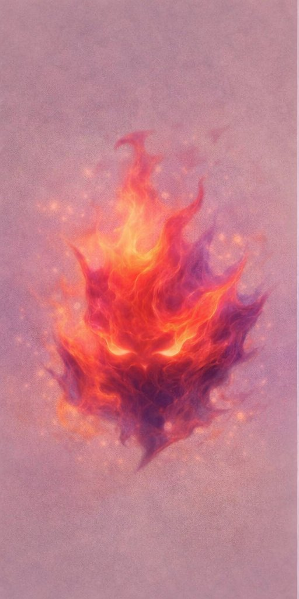

Før børn forstår ord, forstår de rytme, nærvær og gentagelse.

Små børn lærer om verden gennem kroppen, rytmen og relationen. "Hej, lille banker" er en bog til at læse langsomt — og mærke sammen.
Bogen inviterer til at mærke — ikke forstå. Det er nok at lytte og være til stede.
Gentagelse skaber tryghed. Ord der vender tilbage. En stemme man kender. Det er fundamentet.
Bogen er en bro — mellem voksen og barn. Noget at gøre sammen, uden at skulle præstere.
Læs langsomt. Lad ordene lande.
Mærk sammen. Du behøver ikke forklare.
Ingen forklaringer — bare nærvær.
"Interesseret i samarbejde om bogen?"